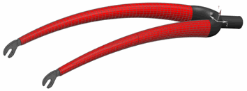

基于区域的过程
该过程中可创建层合板物理属性并将其指派到网格收集器。
您定义 2D 和 3D 单元上的层合板。您也可以将2D 单元拉伸为实体单元。
基于层片的过程
该过程中可定义铺层的全局层片以及它们使模型中的不同多边形面或 2D 网格产生皱褶的方式。根据皱褶数据，软件自动生成全局铺层所表示的层合板物理属性并将其指派到网格收集器中的相应单元。
您仅在 2D 单元上定义层合板。2D 单元可以拉伸为体单元。

在基于层片的过程中，单个物理属性可引用具有数个层合板补片或层片落料的部件的不同层片数据。
|
示例 |
在基于层片的过程中，需要一个具有三个全局层片的层合板物理属性。 在基于区域的过程中，需要四个不同的层合板物理属性。 |